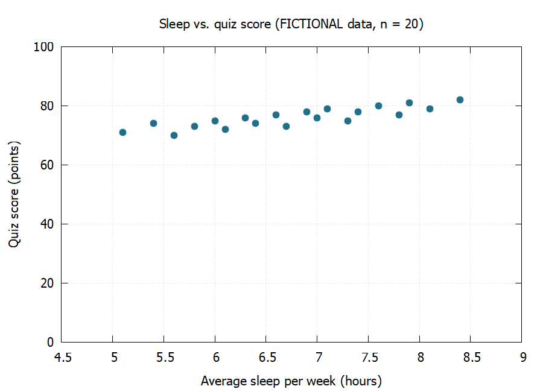

步驟頁教「怎麼按」，這頁講「為什麼」
今天的步驟頁（第 1 步到第 7 步）每一頁都在說：按哪裡、應該看到什麼。照著做就會完成。可是只會照著按，下週換 AI 幫你做的時候，你很難判斷它做得對不對。
這一頁補的是背後的道理：參考文獻為什麼要有、DOI 是什麼、Zotero 的 Connector 跟桌面版怎麼分工、.bib 裡那串代號怎麼來、同一份資料為什麼能畫出兩種觀感的圖。不用從頭讀到尾，卡在哪一步就跳到對應那一節。
這一頁不用交，也沒有勾選框；要交的東西只寫在收尾頁。
先猜這一頁讀完要交嗎？
文內引用跟文末書目是一對
報告裡寫「有研究發現，睡得比較規律的大學生成績也比較好」，讀的人第一個問題就是：哪一個研究？所以學術寫作會做兩件事：
- 在句子後面放一個記號，叫文內引用（in-text citation），例如
[1]。 - 在文章最後列出那篇研究的完整資料，叫參考文獻或書目（references／bibliography）。
兩邊靠同一個記號對上：讀者看到 [1]，往下找第 1 筆，就知道去哪裡讀原文。練習包裡的 cite-one.tex 編出來就是這樣：句子後面有 [1]，最下面「參考文獻」列出 Okano 那篇。
先猜只在文末列書目、句子裡完全不標記，會出什麼問題？
作者、年份、題名、期刊、卷、文章編號、DOI
一筆期刊論文的書目，看起來是一長串字，其實是好幾個欄位排在一起。Zotero 存的、.bib 裡寫的，都是這些欄位；只是排列方式（格式）不同。下面用今天全班那篇當例子，資料以 DOI 登記資料（Crossref）為準。
先猜「4, 16」裡的 16 是什麼？
論文的身分證號碼
DOI（Digital Object Identifier，數位物件識別碼）是登記給一篇論文的號碼，一篇一個、不會變。在任何 DOI 前面加上 https://doi.org/，就會被帶到出版社放這篇論文的網頁。
今天這篇的 DOI 是 10.1038/s41539-019-0055-z。打開 https://doi.org/10.1038/s41539-019-0055-z，網址會變成 nature.com/articles/s41539-019-0055-z。
先猜把 DOI 貼進 Zotero 魔術棒時，前面多了一個空白，可能會怎樣？
10. 開頭那一串。看一眼、打一次，就會出現的四種錯
第 1 步那份「手打版」是照著網頁看一眼、自己打出來的樣子。每個錯都不誇張：少兩位作者、年份差一年、題目少一個字、期刊名記錯。可是交出去，別人就找不到、或找錯那篇。文獻一多、格式一換，手打就顧不完了。
先猜改用 Zotero 從出版社網頁存，是不是就不必核對了？
對應：第 1 步 找四個錯
三欄畫面；文獻庫和文獻集不一樣
Zotero 桌面版打開是三欄：左邊是我的文獻庫（My Library）和底下的文獻集，中間是項目清單，右邊是選到那一筆的詳細資料。
文獻庫是你所有論文放在一起的地方。文獻集（collection）像音樂軟體的播放清單：同一篇論文可以放進好幾個文獻集，資料只存一份。所以把一篇放進第二個文獻集，不會多出一筆重複的資料。
還有一件很實用的事：用 Connector 存論文時，左邊哪個文獻集被選取，論文就進哪一個。這就是第 2 步最後要你先點一下 W12-sleep 的原因。
先猜Okano 那篇同時放在兩個文獻集，點「我的文獻庫」時，它會出現幾筆？
瀏覽器上的按鈕，把資料交給開著的桌面版
Zotero Connector 是瀏覽器的擴充功能（extension）。它負責在論文網頁上抓書目資料，再交給你電腦上開著的 Zotero 桌面版存起來。所以第 3 步一開頭就說：桌面版保持開著，不要關。
- Connector 有 Chrome、Firefox、Safari 版；Edge 要裝 Edge 自己的版本，Chrome 裝的 Edge 看不到。Safari 版跟著桌面版一起裝好，到 Safari 設定的延伸功能打開。
- 存的時候會跳出一個小框，寫著存進哪個文獻集，可以在小框裡直接改。
- 桌面版沒開時，Connector 找不到它，會改問你要不要授權 zotero.org 帳號，存到網路上的文獻庫。
先猜按了 Connector 沒反應，或說「Is Zotero running?」，第一件該檢查什麼？
出版社網頁通常比 Google Scholar 好；存進來不等於資料對
Zotero 官方說明寫：從出版社網站匯入的資料，通常比從 Google Scholar 匯入好得多。Google Scholar 適合「找」，找到之後點進出版社網頁再存。
同一篇論文，不同來源給的資料長得不一樣。下面是今天實際比對過的幾個來源，跟 DOI 登記資料（Crossref）逐欄比。
先猜老師備的 .bib 是用 DOI 直接向 doi.org 要來的，它會不會缺東西？
只靠一個辨識符號加一篇
沒有網頁、只有一串號碼（例如別人報告裡寫的 DOI），可以用 Zotero 桌面版的魔術棒。滑鼠移上去會顯示「依辨識符號加入(可能是複數)項目」（英文介面：Add Item(s) by Identifier）。它在桌面版視窗上方的工具列，不在 Chrome 的 Connector 小框裡。
它認得的辨識符號（identifier）：DOI、ISBN（書）、PubMed ID（PMID）、arXiv ID，還有 ADS Bibcode。貼上、按 Enter，它就照號碼去查書目資料。
先猜PNAS 那篇（DOI 10.1073/pnas.2209123120）有幾位作者？
對應：選做 1-7 魔術棒
LaTeX 讀的書目檔，一筆一筆是純文字
BibTeX 是 LaTeX 讀的書目格式，檔名結尾 .bib，用記事本就能打開。每一筆從 @article{（期刊論文）開始，第一個逗號前面那一串叫代號（citation key），後面一行一個欄位。
下面是練習包裡老師備的那一筆（okano2019-teacher.bib，向 doi.org 要來、只加了換行）。點任一行看它是什麼。
先猜同一篇，Zotero 推出來是 okano_sleep_2019，老師備的檔是 Okano_2019。\cite{} 該寫哪一個？
\cite{} 裡寫的跟你用的那份 .bib 一字不差（大小寫也算）。cite-one.tex 檔頭也寫了：改用老師的檔，代號要改成 Okano_2019。[1] 是怎麼出現的，[?] 又是怎麼來的
LaTeX 編譯時，看到 \cite{okano_sleep_2019}，就去 \bibliography{W12-sleep} 指定的那個檔（W12-sleep.bib，大括號裡不寫 .bib）找代號一模一樣的那一筆。找到了，句子後面變成 [1]，文末「參考文獻」多一筆；找不到，句子後面就印 [?]。
所以看到 [?]，只有兩個地方要查：代號對不對（大小寫也算），檔名對不對。
先猜代號寫成 Okano_sleep_2019（只有第一個字母大寫），會印出什麼？
[?]。大小寫也算不一樣。卡住了頁的處理：回去打開 .bib 抄代號，一個字都不能差，再 Recompile。打字下指令，腳本是一行一行的指令
終端機（terminal）是用打字下指令的視窗。在練習包資料夾開終端機，是因為腳本裡寫的是 sleep-quiz.dat 這個檔名，gnuplot 會在「終端機現在所在的資料夾」找它；不在那個資料夾，就會出現 can't read data file "sleep-quiz.dat"。
雙擊 .gp 檔，黑色視窗一閃就關：腳本跑完馬上結束，你看不到訊息。所以步驟頁要你在終端機打 gnuplot scatter.gp，跑完再看資料夾裡 PNG 的修改時間。
第 6 步先畫的字元版沒設 Y 軸範圍，gnuplot 自己把軸縮到剛好包住資料，Y 軸從 70 左右開始。這一點在下一節很重要。
先猜練習包本來就附了 scatter.png。跑完 gnuplot scatter.gp，怎麼確定是你自己畫的？
資料一個點都沒變，只有軸變了
scatter.gp 跟 truncated.gp 只差兩行：輸出檔名，和 set yrange。正常版 Y 軸從 0 畫到 100，20 個點擠在 70 到 82 分之間，看起來差不多平；截斷版只畫 69 到 83，同樣的點從左下衝到右上。
下面這張圖是用 sleep-quiz.dat 的 20 個點在網頁裡直接畫的（虛構資料，老師編的）。拉滑桿或按按鈕，只改 Y 軸的下限和上限。
先猜從 0–100 換成 69–83，資料改了幾個點？
「一起出現」不等於「一件造成另一件」
Okano 那篇在一門大學化學課，發給 100 位學生穿戴式裝置記錄睡眠（88 位做完），再跟小考、期中考成績比對。結果是：睡得比較好、比較久、比較規律的學生，成績也比較好。
這是相關（correlation）：兩件事一起出現。研究本身沒有說「睡多久就決定考幾分」，那是因果（causation）。光看「一起出現」，還分不出是誰影響誰，或有沒有別的事同時影響兩者。
練習包的 sleep-quiz.dat 更不能拿來下結論：它是老師編的虛構資料，檔頭就寫了「不能拿來說睡多久會考幾分」。
先猜「研究發現睡眠與成績有相關」可以改寫成「睡眠會提高成績」嗎？
標題、軸名、單位，還有軸的範圍
同一份資料可以畫出兩種觀感。讀圖的人有沒有被誤導，很大一部分看圖上有沒有交代清楚。今天兩張圖都寫了標題、X 軸與 Y 軸名稱，括號裡是單位（hours、points），標題還寫了 FICTIONAL（虛構）和 n = 20。差別只在 Y 軸範圍。


先猜兩張圖哪一張「會騙人」？
今天用到的詞，一個一句白話
先猜「文獻庫」跟「文獻集」，哪一個像播放清單？
對應：卡住怎麼辦
換 AI 做同樣的事：今天做過，才看得出它做得對不對
下週換 AI 上場：裝一個讓 AI 幫忙寫論文的技能（skill）、讓 AI 透過 Zotero MCP 替你加論文和查文獻庫，再請 agent 用你今天存的文獻和畫的圖，寫一頁有引用、有圖的 LaTeX。
AI 很會說「我已經存好了」。今天你親手核對過作者、年份、期刊、卷、文章編號、DOI，下週它交回來的東西，你才有東西可以對。
先猜AI 說「好了」，怎樣才算真的好了？
W12-sleep、W12-sleep.bib、兩張圖都留好，下週一開始就會用到。對應：收尾頁 下週預告